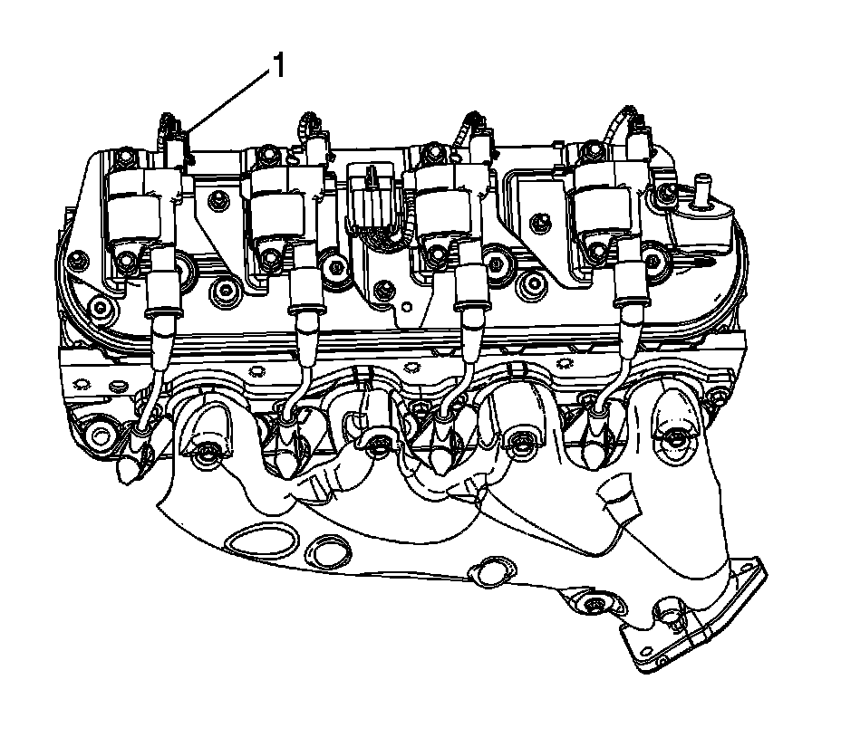
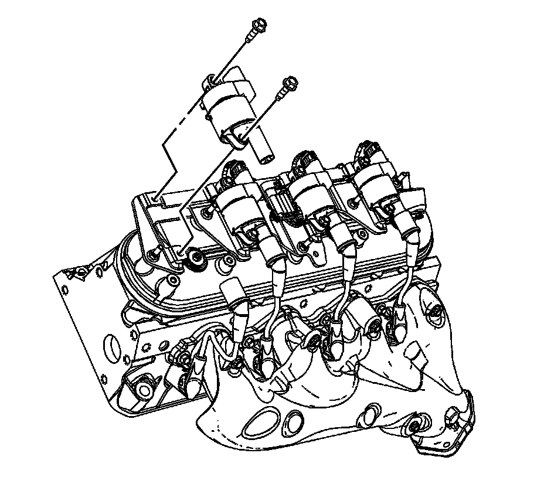

Ignition Coil: Service and Repair
IGNITION COIL REPLACEMENT
REMOVAL PROCEDURE

1. Remove the intake manifold sight shield.
2. Disconnect the ignition coil wiring harness electrical connector (1) from the ignition coil.

3. Remove the spark plug wire from the ignition coil.
- Twist the spark plug wire boot a 1/2 turn.
- Pull only on the boot in order to remove the wire from the ignition coil.
4. Remove the ignition coil bolts.
5. Remove the ignition coil from the bracket. (left side shown, right side similar).
6. There are 2 different manufacturers for the ignition coils and coil brackets. They are as follows:
7. The Melco(R) (1) ignition coil is a square design.
8. The Delphi(R) (2) ignition coil is a round design.
9. The Melco(R) ignition coil bracket (1) is a square design.
10. The Delphi(R) ignition coil bracket (2) is a round design.
INSTALLATION PROCEDURE
1. Position the ignition coil to the ignition coil bracket. (left side shown, right side similar).
2. NOTE: Refer to Fastener Notice.
Install the ignition coil bolts.
Tighten the bolts to 10 N.m (89 lb in).
3. Install the spark plug wire to the ignition coil.
4. Inspect the spark plug wire for proper installation:
- Push sideways on each boot in order the inspect the seating.
- Reinstall any loose boot.
5. Connect the ignition coil wiring harness electrical connector (1) to the ignition coil.
6. Install the intake manifold sight shield.